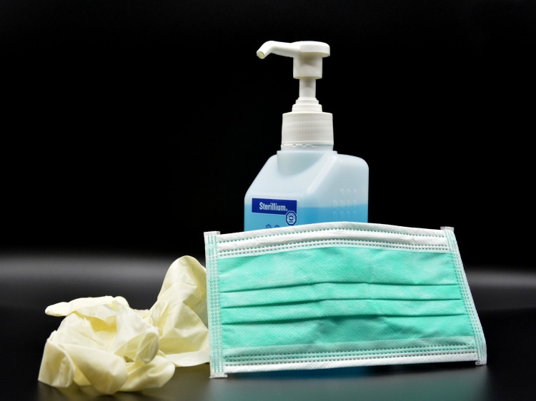

В регионе возвращают обязательное ношение перчаток
Комментарии (всего 122):
Лучший комментарий
Автор: мадам
перейти к комментарию
Кто-нибудь их этих решальщиков может аргументировать необходимость носить перчаток?Каким образом они предохраняют от заражения или распространения заразы?Палата №6.
Бухарь
+78
08.10.2020 - 18:58:43
А не пойти бы вам на... со своими перчатками.Да и масками тоже.Маскарад бл....
Posted On: 2020-10-08T15:58:43
Posted By: Бухарь
Согласен, надо приостановить источники распространения в первую очередь.Семьи заражаются между собой через садики и школы.Сделайте паузу, хотя бы две недели!Инкубационный период для заболевших.Государство будет спонсировать осиротевших детей?В больницах и реанимациях преобладает категория возраста родителей.Так же в комментариях жалуются, что школьники ездиют в общественном транспорте без масок, старшее поколение заражается.
Posted On: 2020-10-08T19:26:19
Posted By: как так
главный вопрос на сегодня, как скоро вакцинация из добровольной станет принудительной?
Posted On: 2020-10-09T06:34:03
Posted By: зырь в корень
зато когда подняли пенс возраст из всех утюгов кричали в 65 жизнь только начинается и такие показухи с бабками устраивали)))
Posted On: 2020-10-09T07:27:05
Posted By: Ахахаха
такой ПОРНОГРАФИИ даже при алкаше Элцыне не было
Posted On: 2020-10-09T07:29:23
Posted By: Точно
вы же за поправки голосовали по Конституции - доступная медицина - НАТЕ КУШАЙТЕ)))
Posted On: 2020-10-09T07:30:59
Posted By: Анти-Майкл
Всё я одел перчатки.Пойду в магазине продукты трогать

Posted On: 2020-10-09T07:44:34
Posted By: Бухарь
к таким перчаткам тебе надо вот такую масочку для комплекта.Проблема с социальной дистанцией решится автоматически!
Posted On: 2020-10-09T10:24:31
Posted By: бугагага
А вот и 'типичный специалист' по всем вопросам на этом сайте.
Posted On: 2020-10-11T09:14:18
Posted By: Егерь
ты чё то против меня имеешь?Не держи в себе, скажи всё что думаешь, вместе мы справимся с твоими проблемами.
Posted On: 2020-10-11T09:27:26
Posted By: бугага
Кто-нибудь их этих решальщиков может аргументировать необходимость носить перчаток?Каким образом они предохраняют от заражения или распространения заразы?Палата №6.
Posted On: 2020-10-08T16:11:51
Posted By: мадам
Они создают видимость работы.
Posted On: 2020-10-09T03:38:10
Posted By: vmt проездом
А вы знаете другие способы решения этой проблемы?Ничего, что все взрослые больницы Волжского переведены в статус ковидных госпиталей?За каким, извините, лешим, эти глубокие пенсионЭры пруться в 7-8 утра по автобусам и маршруткам, поголовно без масок или одевая их на уровень шеи?Что хотели - то и получили.Теперь с любой хворью - аппендицитом, аднекситом или почечной коликой поедете в Советский район.Попутного ветра!:)
Posted On: 2020-10-08T20:54:05
Posted By: Плюшкин
Уважаемый господин😉 Плюшкин, вопрос был - КАКИМ ОБРАЗОМ защищают перчатки от заразы или препятствуют её распространению?Зараза на перчатках, как и на коже рук чувствует себя равно прекрасно!Единственный плюс от резиновых перчаток - это защита кожи рук от агрессивности санитайзеров... если конечно вы пользуетесь санитайзерами.Решальщики переживают за здоровье кожи наших рук?Ну, это вряд ли.В автобусах и маршрутках, господин Плюшкин, есть санитайзеры, чтобы имело смысл напялить перчатки?Или вы и решальщики считают более правильным заносить заразу на перчатках, а не просто на коже рук?Жду ваши аргументы😉, а не демагогию.
Posted On: 2020-10-11T07:49:53
Posted By: мадам
чтобы люди семечки не плевали.Научились люди очистки от семечек складывать в пакетик, это хорошо.Печеньки, чипсики грызут в общественном транспорте, потом еще пальчики оближут.Или в носу ковырнут, а потом этими руками за поручни, за продукты в магазинах хватаются.А в пертчатках брезгливо носик трогать и козюльку ковырнуть .Перчатки хоть и грязные, но саое личико ими ни кто не трогает.
Posted On: 2020-10-13T04:44:11
Posted By: Алгебра11
Гауляйтер, дрянь, сам без маски ходит...
Posted On: 2020-10-08T16:16:30
Posted By: 34рег
34рег писал(а):
сам без маски ходит...
Ошибаешься!Он не ходит, он сидит, т.е. занимает пост, место.Это все остальные ходят вокруг него.
Posted On: 2020-10-09T03:40:39
Posted By: vmt проездом
А реально действенные меры в этом постановлении будут?Эти все ограничения не спасут нас от коллапса,который сейчас в городе и области происходит
Posted On: 2020-10-08T16:18:50
Posted By: Муза
добавлю- детские игровые площадки, которые были до перестройки перед каждым МКД- ликвидировали, сделали, по одной убогой на 5-10 МКД!!Где дети разных возрастов сконцентрированы, конкурируют, плачут, дерутся, выстраиваются в очередь, что бы прокатиться по горке или залезть на лесенку -турник!!!Кто и когда нас так обесценил?'Город, где важен каждый'- это насмешка, отрицающая действительность!!Город двойных стандартов- говорить одно, а по факту- делать противоположное!!!!
Posted On: 2020-10-09T06:21:32
Posted By: Все плохо!
к чему этот памфлет?Проще всё запретить, а не решать проблемы, которые указали
Posted On: 2020-10-08T16:54:41
Posted By: Мишка
так надо улучшать работу первичного звена здравоохранения.Наладить работу поликлиник .чтоб такого не было.При чем тут отмена проездных.и все остальное.
Posted On: 2020-10-08T17:11:30
Posted By: олеговна
Народ недоволен бессмысленностью принимаемых мер и отсутствием осмысленных мер.Какой смысл заставлять носить перчатки, если люди маски не носят толком?И при этом оставлять работать школы, где плотность контактов больше, чем в любом другом учреждении?И не забывайте про школьные столовые...
Posted On: 2020-10-08T17:25:57
Posted By: доцент
А если кто и носит маску, то под носом, что делает бессмысленным её наличие.
Posted On: 2020-10-08T19:52:37
Posted By: Да уж
Все так и есть.Сижу уже 4 часа, и ещё где-то час.Тест у меня положительный, обоняния нет, температура кашель, правда КТ показало чистые лёгкие.Всё за свой счёт делал.А некоторые индивидумы сидят рядом со мной без масок или на подбородке.Интересно им повезёт как мне с лёгкими или слягут?
Posted On: 2020-10-10T07:54:16
Posted By: Maximax34
Ни проходит и дня, чтобы кто-то из мох знакомых не заболел КОВИДом.Волжский, Волгоград, другие города.
Posted On: 2020-10-08T17:06:02
Posted By: Зуй Ли
Сказки писать не пробовали?У Вас получится!
Posted On: 2020-10-09T04:51:09
Posted By: автосвет
На Вашем надгробии разве что, прости Господи... (((
Всем здоровья!Искренне!Серьезнее относитесь к мерам профилактики и предосторожности!
Posted On: 2020-10-09T21:13:06
Posted By: Зуй Ли
Пора поднимать черный флаг!
Posted On: 2020-10-08T17:18:59
Posted By: Проходимец
... и дедушкин Максим с чердака доставать!
Posted On: 2020-10-09T05:22:56
Posted By: 34рег
Вам не кажется, что самое время объявить карантин?Почему на этой войне вождь в бункере несколько месяцев живёт на налоги, а все остальные вынуждены эти налоги создавать
Posted On: 2020-10-08T17:22:15
Posted By: из задних рядов
вас в тот бункер не пустят, а дома на карантине придется лапу сосать.
Posted On: 2020-10-08T17:29:15
Posted By: Олеговна
из задних рядов писал(а):
Почему на этой войне вождь в бункере несколько месяцев живёт на налоги,
Ну, просто, потому что он вождь - на всех только тюрьмы успели настроить, а для силовиков - казармы и участки.И сомневаюсь, что он живёт на налоги - это для него копейки, у него достаточно источников прибыли.
Posted On: 2020-10-09T03:46:27
Posted By: vmt проездом
Олеговна писал(а):
а дома на карантине придется лапу сосать
Тут или так, или от короны пострадать немножко или множко, как повезёт !
из задних рядов писал(а):
Вам не кажется, что самое время объявить карантин?
Давно пора
из задних рядов писал(а):
Почему на этой войне вождь в бункере несколько месяцев живёт на налоги, а все остальные вынуждены эти налоги создавать
А когда было иначе ?Вот и сейчас всё так же.
Зуй Ли писал(а):
Ни проходит и дня, чтобы кто-то из мох знакомых не заболел КОВИДом.Волжский, Волгоград, другие города.
Зараза уже неконтролируема Показать комментарий полностью
Posted On: 2020-10-08T17:43:07
Posted By: 0120
я переболел ковидом, фигня, не страшнее насморка, на работе почти все переболели, друзья, симптомы одинаковые - нет вкуса запаха, небольшая слабость и все.немного температура 36,9-37 пару дней.и весь ковид.шлите нафиг этих перчаточников и масочников.
Posted On: 2020-10-08T18:05:26
Posted By: Васся
Хорошо, что так.Здоровья вам и близким.А наш друг в больнице уже давно, температуру сбили, но поднялся сахар, теперь на инсулине.Был здоровый парень, видимо у всех по разному.
Posted On: 2020-10-08T19:17:32
Posted By: местные
В том то и дело, что лечат зачастую дилетанты.Температуру нужно сбивать только, если она представляет угрозу для жизни, в районе 40 градусов.Если в диапазоне 37-39 не нужно ее сбивать, т.к. организм борется с инфекцией и таким образом выводит токсины из организма.У нас же все, что выше 37 начинают сбивать, тем самым блокируют защитные силы организма.
Posted On: 2020-10-09T04:58:54
Posted By: автосвет
я переболел ковидом, фигня, не страшнее насморка
Posted On: 2020-10-08T18:24:20
Posted By: Вован
олеговна писал(а):
так надо улучшать работу первичного звена здравоохранения.Наладить работу поликлиник .чтоб такого не было.
Ахахаха))) Глаза откройте, нечего уже налаживать!От советской системя здравоохранения остались руины.Новой системы не создали.Вместо заботы о здоровье населения, вместо профилактики заболеваний, вместо повышения коллективного иммунитета нации, мы имеем койко-места и человеко-часы.И всё это под громкие слова о 'здоровой нации'.Очнитесь уже.На вас и ваше здоровье всем плевать, кроме вас самих.И да, копите деньги.Они вам понадобятся, ибо здоровье нынче стОит дорого...
Posted On: 2020-10-08T18:24:59
Posted By: Аятолл
Мы все умрём позже.Важен как раз этот промежуток времени.
Posted On: 2020-10-09T17:40:51
Posted By: Александр_
койко -место и человеко-часы были и в советское время кстати так же как и планы.только вот удивительно в советское время при ручном труде так сказать терапевту давали 12 мин на 1 пациента а вот теперь при всеобщей цифратизации врач тратит по 30 мин.сначала вносит в комп то что осталось от ушедшего больного потом непонятно что вносит а потом 2 мин пациенту.потоки не разделяют лечить некому и не умеют
Posted On: 2020-10-08T18:40:02
Posted By: veh
Смерть фашистским оккупантам!
Posted On: 2020-10-08T18:42:40
Posted By: Fedor
шлите нафиг этих перчаточников и масочников.
Posted On: 2020-10-08T18:43:53
Posted By: Mайкл
Советую все недовольным ношением масок перчаток и всего остального заболеть!Народу нас тупой как пробка, наведите порядок, решайте проблемы... Ау!Выв какой стране живете!Вы заболейте и прочувствуйте, как вы или ваш близкий человек будет умирать, а врач к вам просто не придет и скорая помощь просто не приедет!А сейчас так и происходит, они просто не фиксируют вызовы.Лично мне плевать, что с каждым из вас станет, но вы заражаете всех остальных.Да, может быть от короновируса маска и перчатки не спасут, но от банального орви может и спасет.А если хоть кого-то спасет, то это меньше очередь в больнице и может кому-то из действительно нуждающихся жизнь спасут.
Posted On: 2020-10-08T18:57:07
Posted By: советую!
Есть одна китайская пословица:' Не укоряй соседа за снег на крыше, если у самого порог не убран.'Вы тут пишете про тупой народ, а сами памфлет из нескольких предложений не можете без ошибок написать!
Posted On: 2020-10-09T05:02:53
Posted By: Винт
Народ в массе своей тупой и Вы это еще раз подтвердили своим комментарием.Причем здесь снег?Есть конкретная ситуация, 'снег' Вы можете у себя убрать, но маску на больного соседа в маршрутке не надеть.P.S.Дело не в том, кто и как здесь пишет, дело в том как в целом люди к ситуации относятся.А писать с мобильного устройства не всегда удобно.И не экзамен здесь по русскому языку и стилистике.
Posted On: 2020-10-09T09:25:10
Posted By: советую!
При чем здесь снег?Без комментариев)))
Posted On: 2020-10-09T13:32:26
Posted By: Винт
1.Школы на дистант 2.Детсады на полный карантин 3.Общественный транспорт запретить (маршрутки в первую очередь) 4.Прием в поликлиниках разделить по периодам (больные-здоровые) 5.Работников всех на удаленку
Но скорее всего уже не поможет.
Posted On: 2020-10-08T18:58:28
Posted By: Хазарин
Уже не поможет, минталетет такой.Когда людям говорят что карантин они идуи шашлыки жарить.Щас посмотрим как все запоют, когда с 1 октября все льготы и пособия отменили.
Posted On: 2020-10-08T19:02:34
Posted By: советую!
В 30 школе, директор создал приказ о дополнительных каникулах с 12 октября, т.к учителя болеют, работать не кому.
Posted On: 2020-10-08T19:28:07
Posted By: Дарина Д
Молодец ваш директор!Пусть другие директора школ возьмут с него пример!!!!Он с огромным опытом и личным мнением.Для него главное здоровье детей и его педагогического состава.А есть директора, наоборот скрывают данные, делаю вид, что всё хорошо, боятся, что их оштрафуют за несоблюдение санитарных норм.
Posted On: 2020-10-08T19:36:48
Posted By: Молодец!
А что на удаленку?Может сразу в отпуск за свой счет на пол года?На удаленку можно отправить только офисных работников, чей труд связан в основном с компьютером.
Posted On: 2020-10-09T05:06:07
Posted By: Винт
55 писал(а):
И да, пусть в 55-60 лет на пенсию отправляют раз лишили предпенсов льгот на проезд.
А не проще ли, для правительства, их всех отправить на 2-ой посёлок?
Posted On: 2020-10-09T03:28:29
Posted By: vmt проездом
Хазарин писал(а):
Общественный транспорт запретить (маршрутки в первую очередь)
Ну да, и каждому выдать по персональной автомашине.---------- Общественный транспорт отменить нельзя - людям надо ездить на работу, в больницы, в школы...Если по глупости опять отменить маршрутки, то возрастёт толчея в автобусах (и так не малая) - заболеваемость возрастёт и от этого фактора.
Posted On: 2020-10-09T02:07:18
Posted By: Владимир Б.
олеговна писал(а):
так надо улучшать работу первичного звена здравоохранения.
доцент писал(а):
Народ недоволен
Кому надо?И где это обнаружен народ?НАСЕЛЕНИЕ,а не народ, ропщет, надеется на манну небесную...Но видимо бог, если и бывал в России, то покинул её, да и Моисеев что-то не видно.
Posted On: 2020-10-09T03:24:33
Posted By: vmt проездом
Видимо скоро начнём опять бумажки сами себе писать , разрешающие перемещение.Это ж было самым действенным способом от ковида..
Posted On: 2020-10-09T03:34:44
Posted By: Pride
Так и будет.Ведь связь очевидная - только отменили бумажки и через 3-4 месяца пошла волна.Сразу понятно что из за этого.
Posted On: 2020-10-09T05:24:43
Posted By: Александер
Вы действительно все в Волжском живёте?Столько истеричек на такой маленький город, перебор!
Posted On: 2020-10-09T04:20:43
Posted By: Скажите
Они слишком часто смотрят новости и им нравится бояться))
Posted On: 2020-10-09T05:29:41
Posted By: Винт
Народу нас тупой как пробка,
Posted On: 2020-10-09T04:35:11
Posted By: Страна лжецов
Переведите школы на дистант.А то перчатки носите, работников на удаленку, а детии пусть заразу собирают
Posted On: 2020-10-09T05:05:42
Posted By: Жительница
А что такой вой?Я и раньше (летом) маску одевал в транспорте, и в магазинах.Теперь еще перчатки надо.Ну пусть, если это уменьшит риск заражения, можно потерпеть.
Posted On: 2020-10-09T05:13:19
Posted By: Георгий 145
если не дышать то это тоже немножко уменьшит риск заражения, но придется потерпеть несколько минут
Posted On: 2020-10-09T05:34:40
Posted By: сапог
А кто сказал, что это что то уменьшит?Собянин приказал, наш собезъянничал.А никаких подтверждений, что это помогает как не было, так и нет.Пусть приведут статистику - сколько из числа всех заболевших продавцов в магазинах и кондукторов в автобусах.Ведь это самые рискованные сейчас профессии.Если действительно маски помогают, то эти категории и должны в основном болеть т.к. практически не носят масок.
Posted On: 2020-10-09T05:42:19
Posted By: Александер
Если медики специалисты с вирусами утверждают, что должны переболеть все или получить вакцину, а поскольку по опросу вакине мы не доверяем то остаётся переболеть.На примере себя: мне за 60 лет прекрасный иммунитет если заболею сейчас на пару чихов и здорова, а что будет через год, два я не знаю заболею через год, а организм будет слабый и ' кирдык' мне, правильно?Ни одного дня не носил маску, мотаюсь по всему городу и хутьбы хны, а переболеть мне край надо.
Posted On: 2020-10-09T05:39:35
Posted By: Георгию
Не медик, подробностей не знаю, но когда то читал, что циркулирует два или три подвида ковида (S, L что то типа того) какой то легче переносится, какой то очень тяжело.Теперь практически уверен, что так и есть.Наш руководитель, здоровый парень, бывший атлет, ничего не соблюдал с начала эпидемии, думаю был уверен, что переболеет легко.Да и на самом деле с чего бы: спортом занимается, активный, без хронических болячек...Слёг конкретно, две недели тишина, знаем много уколов колят.Вот не за что бы не поверили.Но видимо действительно зависит от того, что 'поймаешь'.Поэтому не стоит испытывать судьбу.
Posted On: 2020-10-09T06:15:28
Posted By: не всё так просто
Весёлый нынче будет Новый год я чувствую....
Posted On: 2020-10-09T06:28:51
Posted By: кин-дза-дза
Александер писал(а):
только отменили бумажки и через 3-4 месяца пошла волна.
А ведь правда! ))В апреле ходили с бумажками и больных не было почти.А сейчас без бумажек ходим, и Волгоградская область одна из первых по количеству заболевших. )
Posted On: 2020-10-09T07:10:59
Posted By: Pride
Сам придумал или кто помог!За свою жизнь столько фантазеров повидал, немерено.У некоторых доходило до того, что сам выдумал и через какое-то время сам и поверил в то, что выдумал.А по существу занимаясь спортом не значит хорошая имунная, имунная система сложна и спорт может лиж поспособствовать в укреплении, а зависит от наследственности и ряда причин которыми мы перестали пользоваться в большинстве случаев из за изменение образа жизни и питания.
Posted On: 2020-10-09T07:33:32
Posted By: У которого не просто
Верить или нет - ваше право.Написал, то что есть на самом деле!Умные люди возьмут на заметку, лишний раз поберегутся.Подозревать во лжи можно всех и каждого.Что касается иммунный системы, да там всё сложно, но то, что человек работал во все эпидемии гриппа и мы не помним, чтоб когда то брал больничный, говорит о том, что нормальная была иммунная система.Поэтому и удивились, что так сильно заболел, вроде все кричат: ковид- это обычная простуда, в основном в лёгкой форме.Я посчитал своим долгом предупредить людей, а не сказочки здесь рассказывать, а там уж каждый думает своей головой.
Posted On: 2020-10-09T08:54:36
Posted By: не так всё просто
Почему раньше без проблем можно было попасть на прием к терапевту?А теперь даже при серьёзном заболевании не попадёшь.10 месяцев пыталась попасть на приём к окулисту в поликлинике 'Фишер', потом догадалась взять талон к врачу другой поликлинике.Вспомнила что мой полюс дает такое право.
Posted On: 2020-10-09T09:29:23
Posted By: ворчунья
дураков среди врачей меньше чем среди противников масок и перчаток.Врачи прекрасно знают, что реально лечить нечем и негде.Собственно поэтому они сами все на больничный сели чтобы заразу не подхватить.
Posted On: 2020-10-09T09:38:00
Posted By: Все просто
Главное гигиена, а не маски и перчатки.
Posted On: 2020-10-09T09:32:17
Posted By: ворчунья
Решение всего этого простое))) Отключите телефон 103 и 112 и отмените все маски, перчатки и все остальное.А то люди привыкли что если что их вылечат))) Объявите официально что никого госпитализировать не будут и те кто переживает за свое здоровье просто поубивает тех кому все равно))) А что им же все равно, какая разница от короновируса ласты склеить или от молотка соседа.
Posted On: 2020-10-09T09:35:11
Posted By: Так все забавно
убивалка ещё не выросла, умник...
Posted On: 2020-10-09T09:41:08
Posted By: антимасочник
345 писал(а):
маразм крепчал...
зато даже до самых 'промытых' начало доходить кто нами правит.
Анекдоты по теме: 'Холодильник все-таки победит телевизор'
'Если вы не пьете и не материтесь - значит не интересуетесь ситуацией в стране'
'Роскомнадзор запретил россиянам смотреть в окно, потому-что то, что вы там увидите - позорит Великую Державу'
Posted On: 2020-10-09T09:54:22
Posted By: Дважды
Что бы еще людям запретить, что-бы им помочь?
Posted On: 2020-10-09T09:57:38
Posted By: Дважды
Если доверять мировой статистике, то такой фашистский режим продолжится, как минимум лет сто.И, главное, ничего и никому не надо доказывать.Сказал 'счётчик' - много заболело - по домам!Сказал каратель - нет сквозняка и намордников - закрыть магазин!Сказал проверяльщик - болен - изолировать в концлагерь!.Сказал дегенерат - в перчатки - значит исполнять...
Posted On: 2020-10-09T11:56:42
Posted By: Трест
Если человек не болел не значит, что имунная хорошая, иммунитет вырабатываеся во время болезни к данному виду, а при хорошем имунитете он легко и быстро восстанавливается, а для этого нужно как в раннем возрасте переболеть различными видами заболевания так и продолжая её поддерживать в зрелом возрасте перебоев новыми вирусами.
Posted On: 2020-10-09T12:10:23
Posted By: для не так все просто
ацетилсалициловую кислоту-аспирин запретили в аптеках продавать.
Posted On: 2020-10-09T12:12:01
Posted By: семен
дрессировка продолжается
Posted On: 2020-10-09T13:13:59
Posted By: vsevolod
добавлю- детские игровые площадки, которые были до перестройки перед каждым МКД- ликвидировали, сделали, по одной убогой на 5-10 МКД!
Posted On: 2020-10-09T13:15:31
Posted By: ппрпрп
не секрет!!7 мкр, двор многоквартирных домов №№ 10,12,14,16, 8,- по ул.Королева а так же №74 -по Карбышева
Posted On: 2020-10-10T08:32:37
Posted By: а
не секрет!!7 мкр, двор многоквартирных домов №№ 10,12,14,16, 8,- по ул.Королева
Posted On: 2020-10-11T15:25:49
Posted By: Вован
Более того,к металлическим конструкциям 70х,ещё добавили.
Posted On: 2020-10-11T15:48:36
Posted By: Вован
Георгию писал(а):
Если медики специалисты с вирусами утверждают, что должны переболеть все или получить вакцину, а поскольку по опросу вакине мы не доверяем то остаётся переболеть.На примере себя: мне за 60 лет прекрасный иммунитет если заболею сейчас на пару чихов и здорова, а что будет через год, два я не знаю заболею через год, а организм будет слабый и ' кирдык' мне, правильно?Ни одного дня не носил маску, мотаюсь по всему городу и хутьбы хны, а переболеть мне край надо
Иммунитет крайне сложная система, очень много погибших от вируса, помимо стариков это люди иммунный ответ который выразился в цитокиновом шторме.Это излишне сильная реакция иммунного ответа организма, когда организм вырабатывает крайне великое число т клеток и других убийц затем вырабатывается излишнее количество маркеров, на которые в свою очередь реагируют убийцы.В результате - летальный исход.У людей со слабым иммунным ответом такого быть не может
Posted On: 2020-10-09T13:25:40
Posted By: ппрпп
Область в )I(опе по короновирусу.Улучшений нет.
Posted On: 2020-10-09T14:53:21
Posted By: Борат
Андерсен не родственник?
Posted On: 2020-10-09T16:35:32
Posted By: для ппрпп
для ппрпп писал(а):
Андерсен не родственник?
Lola Taylor не родственница ?
Posted On: 2020-10-09T17:32:29
Posted By: oxy
К Вове на поклон бегает со своими бумажками?
Posted On: 2020-10-10T04:09:36
Posted By: Алекс1
Маршрутки закрывали и 2 месяца всего заплатили из бюджета по 12 000 рублей из 5 месяцев.А ещё 3 месяца на что жить?мо
Posted On: 2020-10-10T05:45:14
Posted By: Mайкл
С битком набитыми автобусами.
Posted On: 2020-10-10T10:55:15
Posted By: Владимир Б.
организуй им нормальную работу, а то * не мешки ворочать.Вам тоже можно рекомендовать слетать в космос, но вы никогда никаким способом это совершить не сможете!в городе на 4 000 вакансий с зп выше 12 тыщь.40 000 соискателей см статистику ХХ
Posted On: 2020-10-10T18:06:29
Posted By: manul
Ковид надо сделать избирательным.Он должен выкосить все ЕДРО.И в первую очередь гниду что в бункере прячется.
Posted On: 2020-10-10T21:03:35
Posted By: zorro
Ну вот ещё один бестолковый.Да за последнее время в области число безработных выросло до 114 тысяч человек.И даже государственный центр занятости не может им найти работу.А платят там по 3 000 в месяц и ещё меньше.А у нас маршруток около 400 и с семьями из 3 человек получается 1200.А вы предлагаете из этих 1200 человек просто по своим хотелкам сделать нищих и безработных.Ну и кто вы после этого?
Posted On: 2020-10-11T04:57:45
Posted By: Mайкл писал(а):
740 писал(а):
предлагаете из этих 1200 человек
Вы ещё бабушек и дедушек посчитайте.
740 писал(а):
А вы предлагаете из этих 1200 человек просто по своим хотелкам сделать нищих и безработных
Я хочу, чтобы город развивался и вылез уже из 90хдавайте на производстве выкинем все станки с ЧПУ, а вместо этого наймем 10 слесарей, ух сколько рабочих мест будет,.
Posted On: 2020-10-11T05:10:51
Posted By: Mайкл
Ты всё ниже падаешь в глазах.бабушки и дедушки- пенсии получают.А вот жену и детей кто кормит?Если ты мужа посадил на биржу, то одна жена на 12 000 рублей протянет семью.?Да что тебе рассказывать, если у тебя с ноября по март получается 6 месяцев.Это про перевод стрелок.Всегда считаешь, как хочешь.Может быть ты сам способен обеспечить 400 водителей работой по 30 000 рублей?если нет, то закрой фонтан своих хотелок.
Posted On: 2020-10-11T09:48:14
Posted By: Mайкл писал(а):
740 писал(а):
вот жену и детей кто кормит?
А жена не работает?У всех маршрутчиков жены дома сидят и дети до 23 лет?
740 писал(а):
если у тебя с ноября по март получается 6 месяцев.Это про перевод стрелок.
Читайте внимательнее.Это я про то, что вы пишите.
740 писал(а):
Может быть ты сам способен обеспечить 400 водителей работой
Да они нахрен не нужны в таком количестве, зачем их обеспечивать?Давайте 10000 дворников наймем?
740 писал(а):
Покажи администрации
А при чем тут администрация?Они их должны работой обеспечить?
740 писал(а):
Нет мысли, закрой фонтан.
Вы будете предпоследний, кого я спрошу, что мне делать.
Posted On: 2020-10-11T09:53:56
Posted By: Mайкл
740 писал(а):
Ну вот ещё один бестолковый.Да за последнее время в области число безработных выросло до 114 тысяч человек.И даже государственный центр занятости не может им найти работу.А платят там по 3 000 в месяц и ещё меньше.А у нас маршруток около 400 и с семьями из 3 человек получается 1200.А вы предлагаете из этих 1200 человек просто по своим хотелкам сделать нищих и безработных.Ну и кто вы после этого?
Вы преувеличивайте всё !А маршрутчиков давно пора загнать в стойло.Там очаг постоянного хамство и нарушений ПДД.Необходимо развивать общественный транспорт!!!
Posted On: 2020-10-11T14:50:40
Posted By: Taller
Ну вот, дали отмашку прорвать дамбу заболеваймости.Главное летом отдахнули на море и заграницей дали, хватит, а теперь обратно на ужесточение.Браво!Первый вопрос: где первая в мире зарегистрированная вакцина, которая отправленная в регионе или предназначена для продажи в зарубеж и ООН?Второй вопрос: какого х..на открыты авиосообщение в зарубеж?
Posted On: 2020-10-11T18:25:47
Posted By: Andrey773
А путин себе и своим друзьям поднял зарплату 7 числа,как раз себе на день рождение.Вот умничка.А вы тут ковид,маски,перчи...
Posted On: 2020-10-11T20:59:15
Posted By: петюня
А путин себе и своим друзьям поднял зарплату 7 числа,как раз себе на день рождение.Вот умничка.А вы тут ковид,маски,перчи...
Posted On: 2020-10-11T20:59:15
Posted By: петюня
Хазарин писал(а):
1.2.3.4.5.
6 - всех расстрелять.Кто будет расстрелян не сможет заразиться.
Posted On: 2020-10-12T11:43:24
Posted By: Фролушка
Pride писал(а):
Волгоградская область одна из первых по количеству заболевших. )
Ни разу даже в десятку регионов ни по одному из показателей ВО не попадала.
Posted On: 2020-10-12T11:49:33
Posted By: Фролушка
Кукловоды 'В незараженных районах люди снимали рубашки, кто добровольно, кто под принуждением, осматривались и не находили никаких паразитов.Они следили за новостями, недоумевали и ждали, когда правительство объявит, что опасность миновала.Но ничего нового не происходило, и у людей – как у простых людей, так и у официальных лиц – стали появляться сомнения: стоит ли, мол, и дальше бегать по улицам в костюмах для загара?'
Posted On: 2020-10-14T06:34:24
Posted By: Роберт Энсон Хайнлайн
Content Date: 2020-10-08
Download Date: 2021-05-13
Document ID: L0C04BYPT